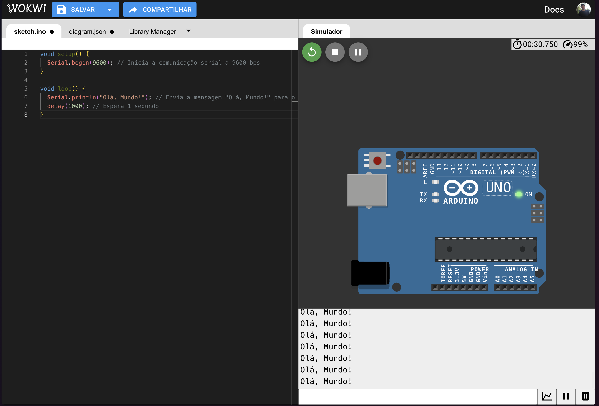
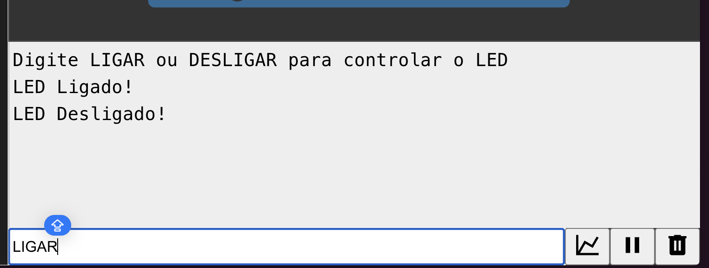

Lab03 - Serial
Comunicação Serial no Wokwi
Ao final deste laboratório, você será capaz de:
- Compreender os princípios da comunicação serial
- Implementar comunicação entre Arduino e computador
- Enviar e receber dados via porta serial
- Processar comandos recebidos pela porta serial
Fundamentos da Comunicação Serial
O que é Comunicação Serial?
A comunicação serial é um protocolo de comunicação onde os dados são transmitidos um bit de cada vez, sequencialmente, através de um canal de comunicação. É amplamente utilizada para comunicação entre microcontroladores e outros dispositivos devido à sua simplicidade e confiabilidade.
Parâmetros da Comunicação Serial
- Baud Rate: Velocidade de transmissão em bits por segundo (bps)
- Bits de Dados: Número de bits em cada pacote (geralmente 8)
- Bits de Parada: Bits que indicam o fim de um pacote (geralmente 1)
- Paridade: Método de verificação de erros (geralmente nenhum)
UART no Arduino
O Arduino possui um conversor USB-Serial integrado que permite a comunicação com o computador através da porta USB.
Internamente, o microcontrolador utiliza o periférico UART (Universal Asynchronous Receiver/Transmitter) para implementar a comunicação serial.

Comunicação Arduino-Computador
Configuração Básica
Para iniciar a comunicação serial no Arduino, utilizamos a função Serial.begin() no setup(), especificando o baud rate:
void setup() {
Serial.begin(9600); // Inicia comunicação serial a 9600 bps
}
Enviando Dados para o Computador
Para enviar dados do Arduino para o computador, utilizamos as funções:
Serial.print(): Envia dados sem quebra de linhaSerial.println(): Envia dados com quebra de linha no final
void loop() {
Serial.println("Olá, Mundo!"); // Envia a mensagem com quebra de linha
delay(1000); // Espera 1 segundo
}
Recebendo Dados do Computador
Para receber dados do computador no Arduino, utilizamos as funções:
Serial.available(): Verifica se há dados disponíveis para leituraSerial.read(): Lê um byte da porta serialSerial.readString(): Lê uma string completa da porta serial
void loop() {
if (Serial.available() > 0) { // Verifica se há dados disponíveis
String comando = Serial.readString(); // Lê a string enviada
// Processa o comando recebido
}
}
Vamos pra prática!!!
Configuração do Ambiente no Wokwi
-
Acesse o site Wokwi.
-
Clique em Start New Project e selecione Arduino Uno.
Desafio 1: Comunicação entre Arduino e Computador
Vamos estabelecer uma comunicação básica entre o Arduino e o computador utilizando o Monitor Serial do Wokwi.
- Carregue o seguinte código no simulador:
void setup() {
Serial.begin(9600); // Inicia a comunicação serial a 9600 bps
}
void loop() {
Serial.println("Olá, Mundo!"); // Envia a mensagem "Olá, Mundo!" para o computador
delay(1000); // Espera 1 segundo
}
-
Observe o painel "Serial Monitor" que aparecerá automaticamente
-
Você deve ver a mensagem "Olá, Mundo!" sendo exibida a cada segundo como a imagem a seguir.

- Modifique o código para enviar seu nome e número de matrícula
Desafio 2: Cronômetro virtual
Com base no que foi aboradado no lab passado, você deverá criar um cronômetro virtual que exibe o tempo decorrido desde o início da simulação usando a função millis().
Instruções:
- Utilize a função
millis()para exibir no Serial Monitor quanto tempo se passou desde que o Arduino começou a funcionar, em segundos. -
Faça com que a mensagem seja atualizada inicialmente a cada 1 segundo.
-
Agora com a base do código funcionando ok, modifique seu código para que o intervalo entre as mensagens seja alterado
dinamicamente, da seguinte forma: -
1 segundo durante os primeiros 10 segundos.
- 2 segundos entre 10 e 20 segundos.
- 5 segundos após 20 segundos.
É esperado como resultado que seja exibido no serial monitor:
Tempo decorrido: 1 segundos
Tempo decorrido: 2 segundos
//assim até 10...
Tempo decorrido: 10 segundos
Tempo decorrido: 12 segundos
//assim até 20...
Tempo decorrido: 20 segundos
Tempo decorrido: 25 segundos
Tempo decorrido: 30 segundos
//assim acima de 20...
Desafio 3: Recebendo Dados do Computador
Vamos criar uma interface para controlar um LED através de comandos enviados pelo Serial Monitor.
Carregue o seguinte código no seu Arduino:
String comando = ""; // Variável para armazenar o comando recebido
const int ledPin = 10;
void setup() {
Serial.begin(9600);
pinMode(ledPin, OUTPUT); // Define o pino como saída
Serial.println("Digite LIGAR ou DESLIGAR para controlar o LED");
}
void loop() {
if (Serial.available()) { // Verifica se há dados disponíveis para leitura
comando = Serial.readStringUntil('\n'); // Lê a string até encontrar uma quebra de linha
comando.trim(); // Remove espaços e quebras de linha extras
if (comando.equalsIgnoreCase("LIGAR")) {
digitalWrite(ledPin, HIGH); // Acende o LED no pino
Serial.println("LED Ligado!");
} else if (comando.equalsIgnoreCase("DESLIGAR")) {
digitalWrite(ledPin, LOW); // Apaga o LED no pino
Serial.println("LED Desligado!");
} else {
Serial.println("Comando não reconhecido. Use LIGAR ou DESLIGAR");
}
}
}
Montagem no Wokwi:
-
Adicione um LED ao pino que está configurado no código (da mesma forma que fizemos no labs anteriores).
-
Inicie a simulação, digite
LIGARe pressione Enter. -
O LED do Arduino deve acender.
-
Digite
DESLIGARe pressione Enter para apagar o LED.

Warning
A comunicação serial é sensível a maiúsculas e minúsculas. Certifique-se de digitar os comandos exatamente como estão no código.
você pode usar o método equalsIgnoreCase() para torna o código mais robusto, aceitando variações como "ligar", "Ligar" ou "LIgaR".
Desafio 4: Cronômetro Dinâmico
Com base nos desafio 2 e desafio 3, crie um cronômetro inteligente.
O intervalo das mensagens não será fixo: ele deverá mudar conforme comandos enviados pelo usuário através do Monitor Serial.
Requisitos do Desafio:
-
Crie um cronômetro que exiba, a cada intervalo, o tempo decorrido desde o início da execução (em segundos).
-
Inicialmente, o intervalo entre mensagens deve ser de 1 segundo.
-
Através do Monitor Serial, permita que o usuário altere dinamicamente o intervalo entre as mensagens digitando comandos como:
-
intervalo 500 (define o intervalo para 500 ms)
-
intervalo 2000 (define o intervalo para 2000 ms)
-
Implemente também comandos especiais:
-
pausarpara interromper temporariamente a exibição das mensagens. continuarpara retomar a contagem.
É esperado como resultado que seja exibido no serial monitor:
Tempo decorrido: 1 segundos
Tempo decorrido: 2 segundos
Tempo decorrido: 3 segundos
// Usuário digita: intervalo 3000
Intervalo alterado para 3000 ms.
Tempo decorrido: 6 segundos
Tempo decorrido: 9 segundos
// Usuário digita: pausar
Cronômetro pausado.
// Usuário digita: continuar
Cronômetro retomado.
Tempo decorrido: 12 segundos
Tempo decorrido: 15 segundos
// Usuário digita: intervalo 2000
Intervalo alterado para 2000 ms.
Tempo decorrido: 17 segundos
Tempo decorrido: 19 segundos